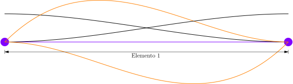
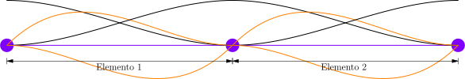

Coordenadas globales
Ejemplo 1
\( L = 5 \ \text{m} \), \( b = 200 \ \text{mm} \), \( h = 300 \ \text{mm} \) y \( E = 200 \ \text{GPa} \)

Un elemento de dos nodos

interpolación de desplazamientos verticales $$ \begin{equation*} \boldsymbol{N} = \begin{bmatrix} 1 - \frac{3}{25} x^{2} + \frac{2}{125} x^{3} & x - \frac{2}{5} x^{2} + \frac{1}{25} x^{3} & \frac{3}{25} x^{2} - \frac{2}{125} x^{3} & -\frac{1}{5} x^{2} + \frac{1}{25} x^{3} \end{bmatrix} \end{equation*} $$
interpolación de curvatura $$ \begin{equation*} \mathbf{B} = \frac{d^{2} \mathbf{N}}{d x^{2}} = \begin{bmatrix} -\frac{6}{25} + \frac{12}{125} x & -\frac{4}{5} + \frac{6}{25} x & \frac{6}{25} - \frac{12}{125} x & -\frac{2}{5} + \frac{6}{25} x \end{bmatrix} \end{equation*} $$
matriz constitutiva $$ \begin{equation*} \mathbf{D} = E \ I = 9 \times 10^{7} \ [\text{N} \cdot \text{m}^{2}] \end{equation*} $$
reemplazando $$ \begin{equation*} \int_{0}^{5} \begin{bmatrix} -\frac{6}{25} + \frac{12}{125} x \\ -\frac{4}{5} + \frac{6}{25} x \\ \frac{6}{25} - \frac{12}{125} x \\ -\frac{2}{5} + \frac{6}{25} x \end{bmatrix} \begin{bmatrix} 9 \times 10^{7} \end{bmatrix} \begin{bmatrix} -\frac{6}{25} + \frac{12}{125} x & -\frac{4}{5} + \frac{6}{25} x & \frac{6}{25} - \frac{12}{125} x & -\frac{2}{5} + \frac{6}{25} x \end{bmatrix} dx \begin{bmatrix} v_{1} \\ \theta_{1} \\ v_{2} \\ \theta_{2} \end{bmatrix} = \int_{0}^{5} -12000 \begin{bmatrix} 1 - \frac{3}{25} x^{2} + \frac{2}{125} x^{3} \\ x - \frac{2}{5} x^{2} + \frac{1}{25} x^{3} \\ \frac{3}{25} x^{2} - \frac{2}{125} x^{3} \\ -\frac{1}{5} x^{2} + \frac{1}{25} x^{3} \end{bmatrix} dx + \begin{bmatrix} F_{1} \\ M_{1} \\ F_{2} \\ M_{2} \end{bmatrix} \end{equation*} $$
integrando $$ \begin{equation*} \begin{bmatrix} 8.64 \times 10^{6} & 2.16 \times 10^{7} & -8.64 \times 10^{6} & 2.16 \times 10^{7} \\ 2.16 \times 10^{7} & 7.2 \times 10^{7} & -2.16 \times 10^{7} & 3.6 \times 10^{7} \\ -8.64 \times 10^{6} & -2.16 \times 10^{7} & 8.64 \times 10^{6} & -2.16 \times 10^{7} \\ 2.16 \times 10^{7} & 3.6 \times 10^{7} & -2.16 \times 10^{7} & 7.2 \times 10^{7} \end{bmatrix} \begin{bmatrix} v_{1} \\ \theta_{1} \\ v_{2} \\ \theta_{2} \end{bmatrix} = \begin{bmatrix} -30000 \\ -25000 \\ -30000 \\ 25000 \end{bmatrix} + \begin{bmatrix} F_{1} \\ M_{1} \\ F_{2} \\ M_{2} \end{bmatrix} \end{equation*} $$
reemplazando las condiciones de contorno $$ \begin{equation*} \begin{bmatrix} 8.64 \times 10^{6} & 2.16 \times 10^{7} & -8.64 \times 10^{6} & 2.16 \times 10^{7} \\ 2.16 \times 10^{7} & 7.2 \times 10^{7} & -2.16 \times 10^{7} & 3.6 \times 10^{7} \\ -8.64 \times 10^{6} & -2.16 \times 10^{7} & 8.64 \times 10^{6} & -2.16 \times 10^{7} \\ 2.16 \times 10^{7} & 3.6 \times 10^{7} & -2.16 \times 10^{7} & 7.2 \times 10^{7} \end{bmatrix} \begin{bmatrix} 0 \\ 0 \\ v_{2} \\ \theta_{2} \end{bmatrix} = \begin{bmatrix} -30000 \\ -25000 \\ -30000 \\ 25000 \end{bmatrix} + \begin{bmatrix} F_{1} \\ M_{1} \\ 0 \\ 0 \end{bmatrix} \end{equation*} $$
sumando $$ \begin{equation*} \begin{bmatrix} 8.64 \times 10^{6} & 2.16 \times 10^{7} & -8.64 \times 10^{6} & 2.16 \times 10^{7} \\ 2.16 \times 10^{7} & 7.2 \times 10^{7} & -2.16 \times 10^{7} & 3.6 \times 10^{7} \\ -8.64 \times 10^{6} & -2.16 \times 10^{7} & 8.64 \times 10^{6} & -2.16 \times 10^{7} \\ 2.16 \times 10^{7} & 3.6 \times 10^{7} & -2.16 \times 10^{7} & 7.2 \times 10^{7} \end{bmatrix} \begin{bmatrix} 0 \\ 0 \\ v_{2} \\ \theta_{2} \end{bmatrix} = \begin{bmatrix} F_{1} - 30000 \\ M_{1} - 25000 \\ -30000 \\ 25000 \end{bmatrix} \end{equation*} $$
resolviendo $$ \begin{align*} F_{1} &= 60000 \ [\text{N}] \\ M_{1} &= 150000 \ [\text{N} \cdot \text{m}] \\ v_{2} &= -1.04 \times 10^{-2} \ [\text{m}] \\ \theta_{2} &= -2.78 \times 10^{-3} \ [\text{rad}] \end{align*} $$
Desplazamientos, deformaciones, esfuerzos, etc.
desplazamientos verticales $$ \begin{align*} v &= \mathbf{N} \ \mathbf{v} \\ &= \begin{bmatrix} 1 - \frac{3}{25} x^{2} + \frac{2}{125} x^{3} & x - \frac{2}{5} x^{2} + \frac{1}{25} x^{3} & \frac{3}{25} x^{2} - \frac{2}{125} x^{3} & -\frac{1}{5} x^{2} + \frac{1}{25} x^{3} \end{bmatrix} \begin{bmatrix} 0 \\ 0 \\ -1.04 \times 10^{-2} \\ -2.78 \times 10^{-3} \end{bmatrix} \\ &= -\frac{1}{1440} x^{2} + \frac{1}{18000} x^{3} \ [\text{m}] \end{align*} $$
desplazamientos horizontales $$ \begin{align*} u &= y \frac{d v}{d x} \\ &= 0.15 \bigg[ -\frac{1}{720} x + \frac{1}{6000} x^{2} \bigg] \\ &= -\frac{1}{4800} x + \frac{1}{40000} x^{2} \ [\text{m}] \end{align*} $$
deformación normal $$ \begin{equation*} \varepsilon_{x} = \frac{d u}{d x} = -\frac{1}{4800} + \frac{1}{20000} x \end{equation*} $$
momentos flectores $$ \begin{equation*} M = E \ I \frac{d^{2} v}{d x^{2}} = -125000 + 30000 x \ [\text{N} \cdot \text{m}] \end{equation*} $$
cortante $$ \begin{equation*} V = \frac{d M}{d x} = 30000 \ [\text{N}] \end{equation*} $$
esfuerzo normal $$ \begin{equation*} \sigma_{x} = E \ \varepsilon_{x} = -\frac{125}{3} + 10 x \ [\text{MPa}] \end{equation*} $$
esfuerzo cortante $$ \begin{equation*} \tau_{yz} = \frac{V Q}{I \ b} = 0.75 \ [\text{MPa}] \end{equation*} $$
Dos elementos de dos nodos

Elemento 1
interpolación de desplazamientos verticales $$ \begin{equation*} \mathbf{N} = \begin{bmatrix} 1 - \frac{12}{25} x^{2} + \frac{16}{125} x^{3} & x - \frac{4}{5} x^{2} + \frac{4}{25} x^{3} & \frac{12}{25} x^{2} - \frac{16}{125} x^{3} & -\frac{2}{5} x^{2} + \frac{4}{25} x^{3} \end{bmatrix} \end{equation*} $$
interpolación de curvatura $$ \begin{equation*} \mathbf{B} = \frac{d^{2} \mathbf{N}}{d x^{2}} = \begin{bmatrix} -\frac{24}{25} + \frac{96}{125} x & -\frac{8}{5} + \frac{24}{25} x & \frac{24}{25} - \frac{96}{125} x & -\frac{4}{5} + \frac{24}{25} x \end{bmatrix} \end{equation*} $$
matriz constitutiva $$ \begin{equation*} \mathbf{D} = E \ I = 9 \times 10^{7} \ [\text{N} \cdot \text{m}^{2}] \end{equation*} $$
reemplazando $$ \begin{equation*} \int_{0}^{2.5} \begin{bmatrix} -\frac{24}{25} + \frac{96}{125} x \\ -\frac{8}{5} + \frac{24}{25} x \\ \frac{24}{25} - \frac{96}{125} x \\ -\frac{4}{5} + \frac{24}{25} x \end{bmatrix} \begin{bmatrix} 9 \times 10^{7} \end{bmatrix} \begin{bmatrix} -\frac{24}{25} + \frac{96}{125} x & -\frac{8}{5} + \frac{24}{25} x & \frac{24}{25} - \frac{96}{125} x & -\frac{4}{5} + \frac{24}{25} x \end{bmatrix} dx \begin{bmatrix} v_{1} \\ \theta_{1} \\ v_{2} \\ \theta_{2} \end{bmatrix} = \int_{0}^{2.5} -12000 \begin{bmatrix} 1 - \frac{12}{25} x^{2} + \frac{16}{125} x^{3} \\ x - \frac{4}{5} x^{2} + \frac{4}{25} x^{3} \\ \frac{12}{25} x^{2} - \frac{16}{125} x^{3} \\ -\frac{2}{5} x^{2} + \frac{4}{25} x^{3} \end{bmatrix} dx + \begin{bmatrix} F_{1} \\ M_{1} \\ F_{2} \\ M_{2} \end{bmatrix} \end{equation*} $$
integrando $$ \begin{equation*} \begin{bmatrix} 6.91 \times 10^{7} & 8.64 \times 10^{7} & -6.91 \times 10^{7} & 8.64 \times 10^{7} \\ 8.64 \times 10^{7} & 1.44 \times 10^{8} & -8.64 \times 10^{7} & 7.2 \times 10^{7} \\ -6.91 \times 10^{7} & -8.64 \times 10^{7} & 6.91 \times 10^{7} & -8.64 \times 10^{7} \\ 8.64 \times 10^{7} & 7.2 \times 10^{7} & -8.64 \times 10^{7} & 1.44 \times 10^{8} \end{bmatrix} \begin{bmatrix} v_{1} \\ \theta_{1} \\ v_{2} \\ \theta_{2} \end{bmatrix} = \begin{bmatrix} -15000 \\ -6250 \\ -15000 \\ 6250 \end{bmatrix} + \begin{bmatrix} F_{1} \\ M_{1} \\ F_{2} \\ M_{2} \end{bmatrix} \end{equation*} $$
Elemento 2
interpolación de desplazamientos verticales $$ \begin{equation*} \mathbf{N} = \begin{bmatrix} -4 + \frac{24}{5} x - \frac{36}{25} x^{2} + \frac{16}{125} x^{3} & -10 + 8 x - 2 x^{2} + \frac{4}{25} x^{3} & 5 - \frac{24}{5} x + \frac{36}{25} x^{2} - \frac{16}{125} x^{3} & -5 + 5 x - \frac{8}{5} x^{2} + \frac{4}{25} x^{3} \end{bmatrix} \end{equation*} $$
interpolación de curvatura $$ \begin{equation*} \mathbf{B} = \frac{d^{2} \mathbf{N}}{d x^{2}} = \begin{bmatrix} -\frac{72}{25} + \frac{96}{125} x & -4 + \frac{24}{25} x & \frac{72}{25} - \frac{96}{125} x & -\frac{16}{5} + \frac{24}{25} x \end{bmatrix} \end{equation*} $$
matriz constitutiva $$ \begin{equation*} \mathbf{D} = E \ I = 9 \times 10^{7} \ [\text{N} \cdot \text{m}^{2}] \end{equation*} $$
reemplazando $$ \begin{equation*} \int_{2.5}^{5} \begin{bmatrix} -\frac{72}{25} + \frac{96}{125} x \\ -4 + \frac{24}{25} x \\ \frac{72}{25} - \frac{96}{125} x \\ -\frac{16}{5} + \frac{24}{25} x \end{bmatrix} \begin{bmatrix} 9 \times 10^{7} \end{bmatrix} \begin{bmatrix} -\frac{72}{25} + \frac{96}{125} x & -4 + \frac{24}{25} x & \frac{72}{25} - \frac{96}{125} x & -\frac{16}{5} + \frac{24}{25} x \end{bmatrix} dx \begin{bmatrix} v_{1} \\ \theta_{1} \\ v_{2} \\ \theta_{2} \end{bmatrix} = \int_{2.5}^{5} -12000 \begin{bmatrix} -4 + \frac{24}{5} x - \frac{36}{25} x^{2} + \frac{16}{125} x^{3} \\ -10 + 8 x - 2 x^{2} + \frac{4}{25} x^{3} \\ 5 - \frac{24}{5} x + \frac{36}{25} x^{2} - \frac{16}{125} x^{3} \\ -5 + 5 x - \frac{8}{5} x^{2} + \frac{4}{25} x^{3} \end{bmatrix} dx + \begin{bmatrix} F_{1} \\ M_{1} \\ F_{2} \\ M_{2} \end{bmatrix} \end{equation*} $$
integrando $$ \begin{equation*} \begin{bmatrix} 6.91 \times 10^{7} & 8.64 \times 10^{7} & -6.91 \times 10^{7} & 8.64 \times 10^{7} \\ 8.64 \times 10^{7} & 1.44 \times 10^{8} & -8.64 \times 10^{7} & 7.2 \times 10^{7} \\ -6.91 \times 10^{7} & -8.64 \times 10^{7} & 6.91 \times 10^{7} & -8.64 \times 10^{7} \\ 8.64 \times 10^{7} & 7.2 \times 10^{7} & -8.64 \times 10^{7} & 1.44 \times 10^{8} \end{bmatrix} \begin{bmatrix} v_{1} \\ \theta_{1} \\ v_{2} \\ \theta_{2} \end{bmatrix} = \begin{bmatrix} -15000 \\ -6250 \\ -15000 \\ 6250 \end{bmatrix} + \begin{bmatrix} F_{1} \\ M_{1} \\ F_{2} \\ M_{2} \end{bmatrix} \end{equation*} $$
Ensamblaje y solución
ensamblando matriz global $$ \begin{equation*} \begin{bmatrix} 6.91 \times 10^{7} & 8.64 \times 10^{7} & -6.91 \times 10^{7} & 8.64 \times 10^{7} & 0 & 0 \\ 8.64 \times 10^{7} & 1.44 \times 10^{8} & -8.64 \times 10^{7} & 7.2 \times 10^{7} & 0 & 0 \\ -6.91 \times 10^{7} & -8.64 \times 10^{7} & 6.91 \times 10^{7} + 6.91 \times 10^{7} & 8.64 \times 10^{7} - 8.64 \times 10^{7} & -6.91 \times 10^{7} & 8.64 \times 10^{7} \\ 8.64 \times 10^{7} & 7.2 \times 10^{7} & 8.64 \times 10^{7} - 8.64 \times 10^{7} & 1.44 \times 10^{8} + 1.44 \times 10^{8} & -8.64 \times 10^{7} & 7.2 \times 10^{7} \\ 0 & 0 & -6.91 \times 10^{7} & -8.64 \times 10^{7} & 6.91 \times 10^{7} & -8.64 \times 10^{7} \\ 0 & 0 & 8.64 \times 10^{7} & 7.2 \times 10^{7} & -8.64 \times 10^{7} & 1.44 \times 10^{8} \end{bmatrix} \begin{bmatrix} v_{1} \\ \theta_{1} \\ v_{2} + v_{1} \\ \theta_{2} + \theta_{1} \\ v_{2} \\ \theta_{2} \end{bmatrix} = \begin{bmatrix} -15000 \\ -6250 \\ -15000 - 15000 \\ 6250 - 6250 \\ -15000 \\ 6250 \end{bmatrix} + \begin{bmatrix} F_{1} \\ M_{1} \\ F_{2} + F_{1} \\ M_{2} + M_{1} \\ F_{2} \\ M_{2} \end{bmatrix} \end{equation*} $$
sumando $$ \begin{equation*} \begin{bmatrix} 6.91 \times 10^{7} & 8.64 \times 10^{7} & -6.91 \times 10^{7} & 8.64 \times 10^{7} & 0 & 0 \\ 8.64 \times 10^{7} & 1.44 \times 10^{8} & -8.64 \times 10^{7} & 7.2 \times 10^{7} & 0 & 0 \\ -6.91 \times 10^{7} & -8.64 \times 10^{7} & 1.38 \times 10^{8} & 0 & -6.91 \times 10^{7} & 8.64 \times 10^{7} \\ 8.64 \times 10^{7} & 7.2 \times 10^{7} & 0 & 2.88 \times 10^{8} & -8.64 \times 10^{7} & 7.2 \times 10^{7} \\ 0 & 0 & -6.91 \times 10^{7} & -8.64 \times 10^{7} & 6.91 \times 10^{7} & -8.64 \times 10^{7} \\ 0 & 0 & 8.64 \times 10^{7} & 7.2 \times 10^{7} & -8.64 \times 10^{7} & 1.44 \times 10^{8} \end{bmatrix} \begin{bmatrix} v_{1} \\ \theta_{1} \\ v_{2} \\ \theta_{2} \\ v_{3} \\ \theta_{3} \end{bmatrix} = \begin{bmatrix} -15000 \\ -6250 \\ -30000 \\ 0 \\ -15000 \\ 6250 \end{bmatrix} + \begin{bmatrix} F_{1} \\ M_{1} \\ F_{2} \\ M_{2} \\ F_{3} \\ M_{3} \end{bmatrix} \end{equation*} $$
reemplazando las condiciones de contorno $$ \begin{equation*} \begin{bmatrix} 6.91 \times 10^{7} & 8.64 \times 10^{7} & -6.91 \times 10^{7} & 8.64 \times 10^{7} & 0 & 0 \\ 8.64 \times 10^{7} & 1.44 \times 10^{8} & -8.64 \times 10^{7} & 7.2 \times 10^{7} & 0 & 0 \\ -6.91 \times 10^{7} & -8.64 \times 10^{7} & 1.38 \times 10^{8} & 0 & -6.91 \times 10^{7} & 8.64 \times 10^{7} \\ 8.64 \times 10^{7} & 7.2 \times 10^{7} & 0 & 2.88 \times 10^{8} & -8.64 \times 10^{7} & 7.2 \times 10^{7} \\ 0 & 0 & -6.91 \times 10^{7} & -8.64 \times 10^{7} & 6.91 \times 10^{7} & -8.64 \times 10^{7} \\ 0 & 0 & 8.64 \times 10^{7} & 7.2 \times 10^{7} & -8.64 \times 10^{7} & 1.44 \times 10^{8} \end{bmatrix} \begin{bmatrix} 0 \\ 0 \\ v_{2} \\ \theta_{2} \\ v_{3} \\ \theta_{3} \end{bmatrix} = \begin{bmatrix} -15000 \\ -6250 \\ -30000 \\ 0 \\ -15000 \\ 6250 \end{bmatrix} + \begin{bmatrix} F_{1} \\ M_{1} \\ 0 \\ 0 \\ 0 \\ 0 \end{bmatrix} \end{equation*} $$
sumando $$ \begin{equation*} \begin{bmatrix} 6.91 \times 10^{7} & 8.64 \times 10^{7} & -6.91 \times 10^{7} & 8.64 \times 10^{7} & 0 & 0 \\ 8.64 \times 10^{7} & 1.44 \times 10^{8} & -8.64 \times 10^{7} & 7.2 \times 10^{7} & 0 & 0 \\ -6.91 \times 10^{7} & -8.64 \times 10^{7} & 1.38 \times 10^{8} & 0 & -6.91 \times 10^{7} & 8.64 \times 10^{7} \\ 8.64 \times 10^{7} & 7.2 \times 10^{7} & 0 & 2.88 \times 10^{8} & -8.64 \times 10^{7} & 7.2 \times 10^{7} \\ 0 & 0 & -6.91 \times 10^{7} & -8.64 \times 10^{7} & 6.91 \times 10^{7} & -8.64 \times 10^{7} \\ 0 & 0 & 8.64 \times 10^{7} & 7.2 \times 10^{7} & -8.64 \times 10^{7} & 1.44 \times 10^{8} \end{bmatrix} \begin{bmatrix} 0 \\ 0 \\ v_{2} \\ \theta_{2} \\ v_{3} \\ \theta_{3} \end{bmatrix} = \begin{bmatrix} F_{1} - 15000 \\ M_{1} - 6250 \\ -30000 \\ 0 \\ -15000 \\ 6250 \end{bmatrix} \end{equation*} $$
resolviendo $$ \begin{align*} F_{1} &= 60000 \ [\text{N}] \\ M_{1} &= 150000 \ [\text{N} \cdot \text{m}] \\ v_{2} &= -3.69 \times 10^{-3} \ [\text{m}] \\ \theta_{2} &= -2.43 \times 10^{-3} \ [\text{rad}] \\ v_{3} &= -1.04 \times 10^{-2} \ [\text{m}] \\ \theta_{3} &= -2.78 \times 10^{-3} \ [\text{rad}] \end{align*} $$
Desplazamientos, deformaciones, esfuerzos, etc.
Elemento 1
desplazamientos verticales $$ \begin{align*} v &= \mathbf{N} \ \mathbf{v} \\ &= \begin{bmatrix} 1 - \frac{12}{25} x^{2} + \frac{16}{125} x^{3} & x - \frac{4}{5} x^{2} + \frac{4}{25} x^{3} & \frac{12}{25} x^{2} - \frac{16}{125} x^{3} & -\frac{2}{5} x^{2} + \frac{4}{25} x^{3} \end{bmatrix} \begin{bmatrix} 0 \\ 0 \\ -3.69 \times 10^{-3} \\ -2.43 \times 10^{-3} \end{bmatrix} \\ &= -\frac{23}{28800} x^{2} + \frac{1}{12000} x^{3} \ [\text{m}] \end{align*} $$
desplazamientos horizontales $$ \begin{align*} u &= y \frac{d v}{d x} \\ &= 0.15 \bigg[ -\frac{23}{14400} x + \frac{1}{4000} x^{2} \bigg] \\ &= -\frac{23}{96000} x + \frac{3}{80000} x^{2} \ [\text{m}] \end{align*} $$
deformación normal $$ \begin{equation*} \varepsilon_{x} = \frac{d u}{d x} = -\frac{23}{96000} + \frac{3}{40000} x \end{equation*} $$
momentos flectores $$ \begin{equation*} M = E I \frac{d^{2} v}{d x^{2}} = -143750 + 45000 x \ [\text{N} \cdot \text{m}] \end{equation*} $$
cortante $$ \begin{equation*} V = \frac{d M}{d x} = 45000 \ [\text{N}] \end{equation*} $$
esfuerzo normal $$ \begin{equation*} \sigma_{x} = E \ \varepsilon_{x} = -\frac{575}{12} + 15 x \ [\text{MPa}] \end{equation*} $$
esfuerzo cortante $$ \begin{equation*} \tau_{yz} = \frac{V Q}{I \ b} = 1.125 \ [\text{MPa}] \end{equation*} $$
Elemento 2
desplazamientos verticales $$ \begin{align*} v &= \mathbf{N} \ \mathbf{v} \\ &= \begin{bmatrix} -4 + \frac{24}{5} x - \frac{36}{25} x^{2} + \frac{16}{125} x^{3} & -10 + 8 x - 2 x^{2} + \frac{4}{25} x^{3} & 5 - \frac{24}{5} x + \frac{36}{25} x^{2} - \frac{16}{125} x^{3} & -5 + 5 x - \frac{8}{5} x^{2} + \frac{4}{25} x^{3} \end{bmatrix} \begin{bmatrix} -3.69 \times 10^{-3} \\ -2.43 \times 10^{-3} \\ -1.04 \times 10^{-2} \\ -2.78 \times 10^{-3} \end{bmatrix} \\ &= \frac{1}{1152} - \frac{1}{960} x - \frac{11}{28800} x^{2} + \frac{1}{36000} x^{3} \ [\text{m}] \end{align*} $$
desplazamientos horizontales $$ \begin{align*} u &= y \frac{d v}{d x} \\ &= 0.15 \bigg[ - \frac{1}{960} -\frac{11}{14400} x + \frac{1}{12000} x^{2} \bigg] \\ &= -\frac{1}{6400} - \frac{11}{96000} x - \frac{1}{80000} x^{2} \ [\text{m}] \end{align*} $$
deformación normal $$ \begin{equation*} \varepsilon_{x} = \frac{d u}{d x} = -\frac{11}{96000} + \frac{1}{40000} x \end{equation*} $$
momentos flectores $$ \begin{equation*} M = E I \frac{d^{2} v}{d x^{2}} = -68750 + 15000 x \ [\text{N} \cdot \text{m}] \end{equation*} $$
cortante $$ \begin{equation*} V = \frac{d M}{d x} = 15000 \ [\text{N}] \end{equation*} $$
esfuerzo normal $$ \begin{equation*} \sigma_{x} = E \ \varepsilon_{x} = -\frac{275}{12} + 5 x \ [\text{MPa}] \end{equation*} $$
esfuerzo cortante $$ \begin{equation*} \tau_{yz} = \frac{V Q}{I \ b} = 0.425 \ [\text{MPa}] \end{equation*} $$